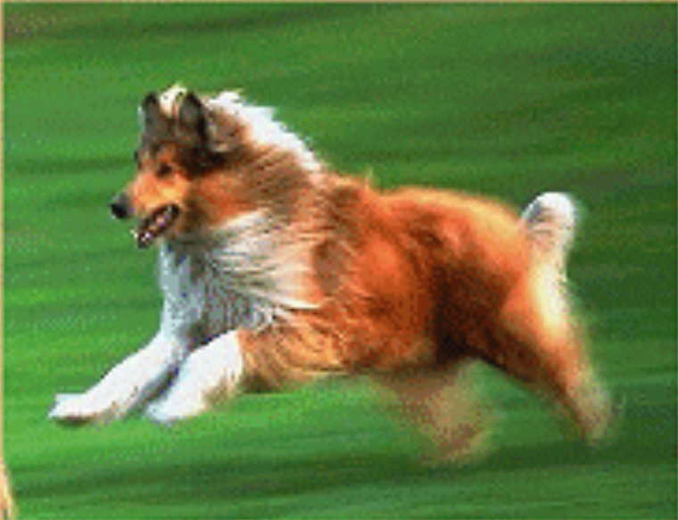
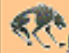

 My dog Sashe is my best friend. She likes to chose the soccer ball when I practice. It is so funny to see her running down the field trying to catch the ball with her mouth. It just won't fit!
Once Sesha saved my life. When I wes enly 4 years old, I started to go inte the street to get a ball that had rolled across the street. Of course I did not think to look for cars Sasha got in front of ine and knocked me bockwards onto the sidewcik. I wos mod until I sow the cor go by where I would heve been. Then I was so happy that Sosha was sinarter than I was!
 log log my team
Back to Hester't pogs
01/05/02